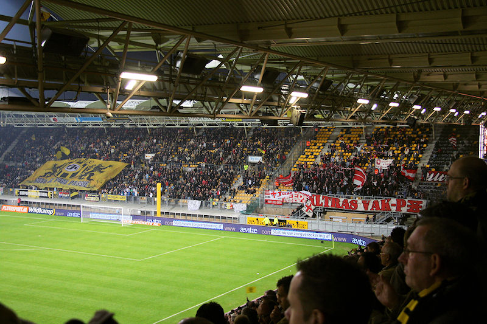

Sfeergroepen op Oost.
Veel getrommel en gezang met als dieptepunt het kleuterschool-niveau: "Wij
staan bovenaan...".
Castro heeft een terugspeelbal van Saeijs in handen genomen: directe vrije
trap. De bal gaat via De Fauw over....
Het vermeende buitenspel-doelpunt van Ruiz: 0-1, (34').
Soch schiet...
... 0-2 binnen, (40").
De optimisten gaan voor een 2-2.
De voor de zwakke Skoubo ingevallen Matondo scoort 1-2, (56'). Het gebeurt
in een twintig minuten durende fase waarin Twente overklast
wordt door een gedreven Roda.
Balen van deze uitslag, zeker wanneer een zekere penalty is onthouden.
Scheids Bossen zag namelijk geen hands in een geblokte schot
van Hadouir.
Janssen in de omloop.
Skoubo in gesprek met een supporter.
Kickoff-sfeer was prima ondanks het verlies.
Linssen.
De supporters uit Weert!!!
Het werd potdorie gezelig in de KO.
Duidelijk... voetbal verbroedert!
Tot gauw....